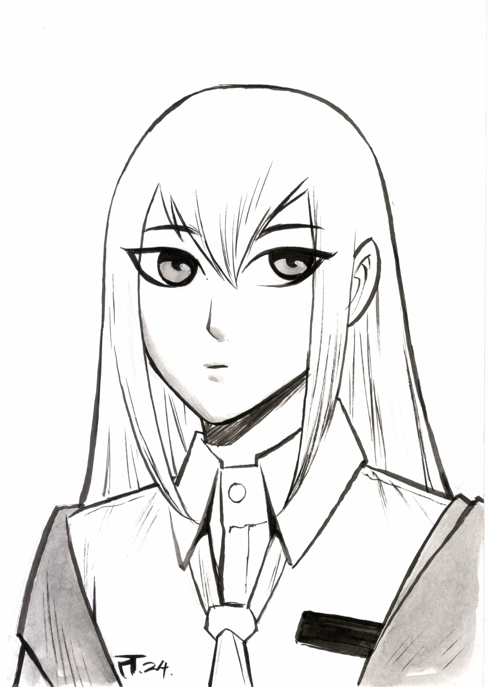

I was working in the computation lab at IBM's San Jose development lab. A Calcomp plotter had been attached to an IBM 1401 via the 1407 typewriter console. [The algorithm] was in production use by summer 1962, possibly a month or so earlier. Programs in those days were freely exchanged among corporations so Calcomp (Jim Newland and Calvin Hefte) had copies. When I returned to Stanford in Fall 1962, I put a copy in the Stanford comp center library. A description of the line drawing routine was accepted for presentation at the 1963 ACM national convention in Denver, Colorado. It was a year in which no proceedings were published, only the agenda of speakers and topics in an issue of Communications of the ACM. A person from the IBM Systems Journal asked me after I made my presentation if they could publish the paper. I happily agreed, and they printed it in 1965.
Netpbm is a toolkit for manipulation of graphic images, including conversion of images between a variety of different formats. There are over 350 separate tools in the package including converters for about 100 graphics formats. Examples of the sort of image manipulation we're talking about are: Shrinking an image by 10%; Cutting the top half off of an image; Making a mirror image; Creating a sequence of images that fade from one image to another.
I'm bold not only visually but semantically emphasis on me 